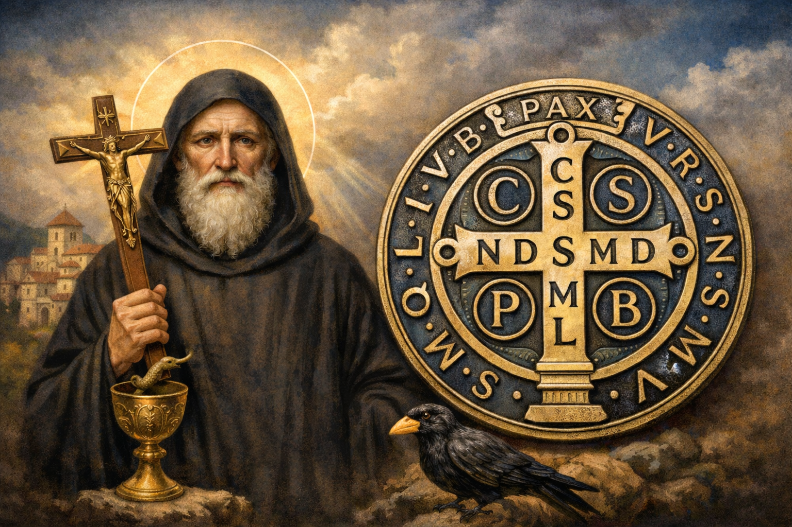

A Vida de São Bento e o Poder da Medalha de Proteção
São Bento de Núrsia é uma das figuras mais influentes da história da Igreja e da civilização ocidental. Proclamado Padroeiro da Europa, ele fundou a Ordem dos Beneditinos e escreveu a famosa "Regra de São Bento", que equilibra o trabalho e a oração (Ora et Labora). No entanto, para muitos fiéis, sua fama está intimamente ligada à poderosa medalha que leva seu nome, um sacramental reconhecido pela Igreja por sua eficácia contra as ciladas do mal.
Quem foi São Bento? O Homem da Oração e do Trabalho
Nascido por volta do ano 480 na Itália, Bento abandonou uma vida de privilégios em Roma para buscar a Deus na solidão de uma caverna em Subiaco. Sua santidade atraiu muitos discípulos, levando-o a fundar doze mosteiros, sendo o mais famoso o de Monte Cassino. Sua vida foi marcada por milagres, mas também por perseguições, incluindo tentativas de envenenamento das quais ele foi salvo milagrosamente pelo sinal da cruz.
"A ociosidade é inimiga da alma; por isso, em certas horas devem os irmãos ocupar-se no trabalho manual e em outras na leitura espiritual." (Regra de São Bento, Cap. 48)
O Significado da Medalha de São Bento
A medalha de São Bento não é um amuleto de sorte, mas um sacramental. Isso significa que ela é um sinal sagrado instituído pela Igreja para preparar os fiéis para receber a graça e santificar as diversas circunstâncias da vida. Ela contém símbolos e siglas que são, na verdade, uma poderosa oração de exorcismo.
As Inscrições na Frente da Medalha
Na face frontal, vemos São Bento segurando uma cruz na mão direita e a "Regra" na mão esquerda. Ao seu lado, há um cálice do qual sai uma serpente (lembrando o vinho envenenado que se quebrou ao sinal da cruz) e um corvo com um pão (lembrando o pão envenenado que o pássaro levou para longe).
As Siglas no Verso: A Oração de Exorcismo
O verso da medalha apresenta uma cruz com várias letras, que são as iniciais de versos em latim:
- C S S M L: Crux Sacra Sit Mihi Lux (A Cruz Sagrada seja a minha luz).
- N D S M D: Non Draco Sit Mihi Dux (Não seja o dragão o meu guia).
- C S P B: Crux Sancti Patris Benedicti (Cruz do Santo Pai Bento).
- V R S N S M V - S M Q L I V B: Vade Retro Satana, Nunquam Suade Mihi Vana - Sunt Mala Quae Libas, Ipse Venena Bibas (Retira-te, Satanás, nunca me aconselhes coisas vãs - é mau o que tu ofereces, bebe tu mesmo os teus venenos).
Como Usar a Medalha com Fé
Para que a medalha seja um instrumento de graça, ela deve ser abençoada por um sacerdote usando a fórmula específica de bênção de São Bento. O fiel deve usá-la com espírito de fé, buscando viver os ensinamentos de Cristo e a proteção contra o pecado. Ela pode ser usada no pescoço, colocada na porta das casas, no carro ou em locais que necessitem de proteção espiritual.
Conclusão: A Cruz como Escudo
A devoção a São Bento nos ensina que a nossa maior proteção é a Cruz de Nosso Senhor Jesus Cristo. São Bento venceu o mal não por suas próprias forças, mas pela confiança absoluta no poder de Deus. Ao usarmos sua medalha e estudarmos sua vida, somos chamados a fazer da nossa vida um constante "Ora et Labora", buscando a santidade no cotidiano e a vitória sobre todas as tentações.
Que São Bento interceda por nós, livrando-nos de todo mal e conduzindo-nos pelo caminho da paz e da luz.